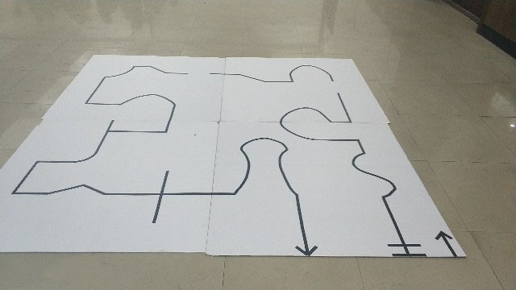

活动详情
智能循迹挑战赛
智能循迹挑战赛是一场由院内学生社团组织发起，院团委主办，学生创新社团和学生会承办的创新竞赛活动，是我院院内最大规模的智能小车循迹赛事，该比赛充分融合了计算机、电子、通信、机械、物理、力学、光学、电力等多个学科和专业知识，是各个学科和专业的交叉融合。通过比赛加强了各专业学生交流学习，开阔了学生视野，从而了解掌握不同专业知识，增强创新意识和创新能力。17年12月初，我们举办了软件与应用科技学院第一届智能循迹院赛。
智能循迹挑战赛是一场由院内学生社团组织发起，院团委主办，学生创新社团和学生会承办的创新竞赛活动，是我院院内最大规模的智能小车循迹赛事，该比赛充分融合了计算机、电子、通信、机械、物理、力学、光学、电力等多个学科和专业知识，是各个学科和专业的交叉融合。通过比赛加强了各专业学生交流学习，开阔了学生视野，从而了解掌握不同专业知识，增强创新意识和创新能力。17年12月初，我们举办了软件与应用科技学院第一届智能循迹院赛。